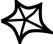

מודל
SAP
חיבור אוטומטי
צליל התראות
כלים
קישורים שימושיים
התרחשה שגיאה בניסיון יצירת התראה לאוטובוס. התראות קיימות נמחקו.
עדיין לא הוגדרו שם משתמש וסיסמה!
לחץ
כאן
להגדרת פרטי ההתחברות.
תזכורת: התוסף אינו מעלה את הפרטים שלכם לאף שרת והם נשארים כאן, על המחשב שלכם.
חדש בתוסף ובאגים ידועים
מטלות קרובות (מודל)
מטלות קרובות (מדמ"ח)

מטלות קרובות (וובוורק)
ארגונית
++
– כל המטלות במקום אחד
מחשבון ממוצע אקדמי
חיפוש קורס מוקלט
שליחה להדפסה בטכניון
אוטובוסים קרובים - זמן אמת
מסעדות פתוחות בקרבת הטכניון
מנהל הורדות
מזלגבינה (Cheesefork)
אתר הציונים הטכניוני
Students – לשעבר האתר הראשי
אתר הקורסים של הפקולטה למדמ"ח
BookMe – הזמנת חדרי לימוד בקמפוס
אתר ספריות הטכניון
לוח שנה אקדמי
מרכז הספורט הטכניוני
מפה רשמית של הטכניון
ספר טלפונים טכניוני
אס"ט – אגודת הסטונדטים בטכניון
תוכנות ברישיון טכניוני
ניהול משתמש טכניוני
תוכנות ברישיון טכניוני
אופיס 365
חנות Microsoft (כלל טכניוני)
לחץ
כאן
והתחבר לניהול המשתמש הטכניוני שלך, בחר באפשרות
"מיקרוסופט - רשיונות תוכנה"
ואז יופיע הקישור לחנות.
חנויות Microsoft & VMWare (מדמ"ח)
מטלב
שליחה להדפסה בטכניון
שחור לבן, חד-צדדי
שחור לבן, דו-צדדי
צבעוני, חד-צדדי
שחור לבן, 2 שקופיות בדף, חד-צדדי
שחור לבן, 2 שקופיות בדף, דו-צדדי
שחור לבן, 4 שקופיות בדף, חד-צדדי
שחור לבן, 4 שקופיות בדף, דו-צדדי
שקופית יחידה
שתי שקופיות
ארבע שקופיות